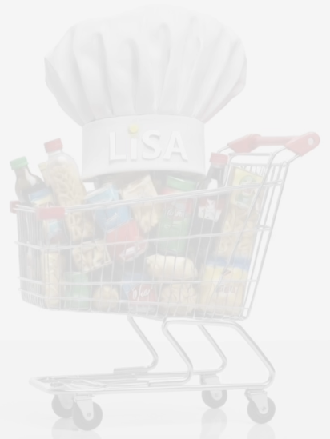
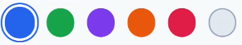
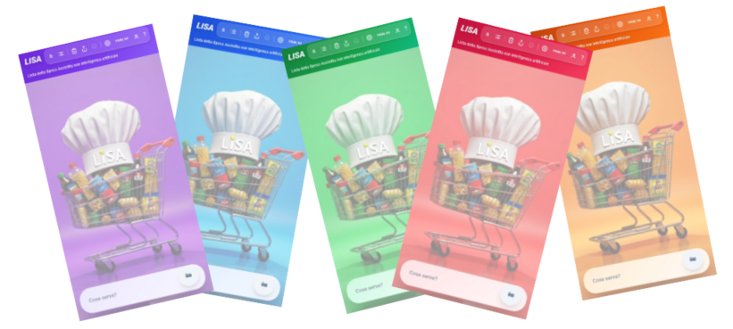

Questa sezione consente di modificare l'aspetto del programma in base ai tuoi gusti e alle esigenze di leggibilita sul dispositivo.
Le immagini seguenti mostrano lo stesso sfondo con livelli diversi di trasparenza/contrasto, come nel documento originale.

Suggerimento: su display molto luminosi conviene aumentare l'intensita; in ambienti scuri e utile ridurla per affaticare meno la vista.
Puoi scegliere il colore guida dell'interfaccia tramite le varianti mostrate qui sotto.

Il tema scuro usa uno sfondo prevalentemente scuro con testo in contrasto; il tema chiaro mantiene una resa luminosa. Con impostazione automatica, LiSA segue il tema del telefono.

Questa pagina fa parte della sezione Impostazioni e puo essere richiamata dall'help principale.